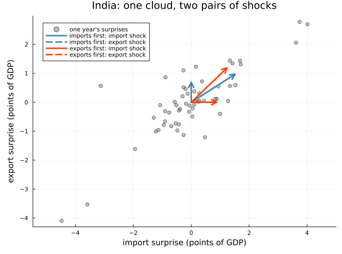
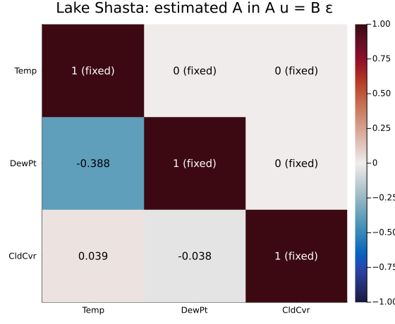
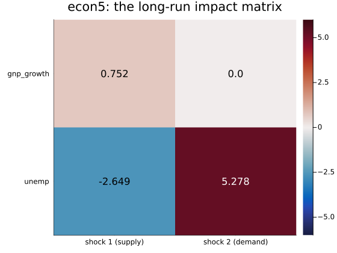
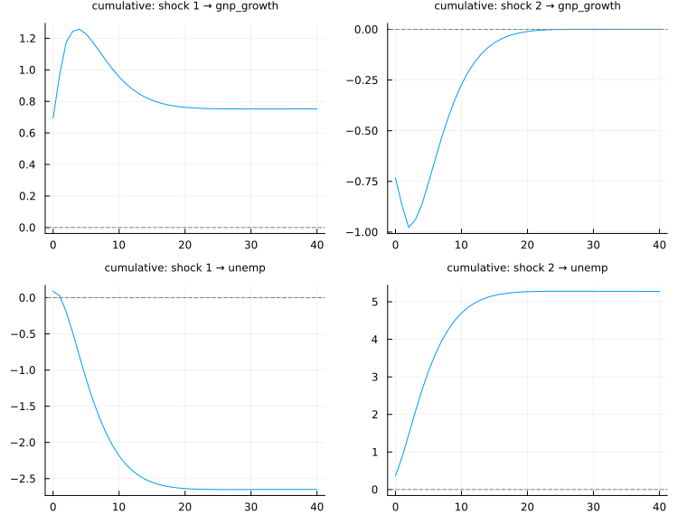
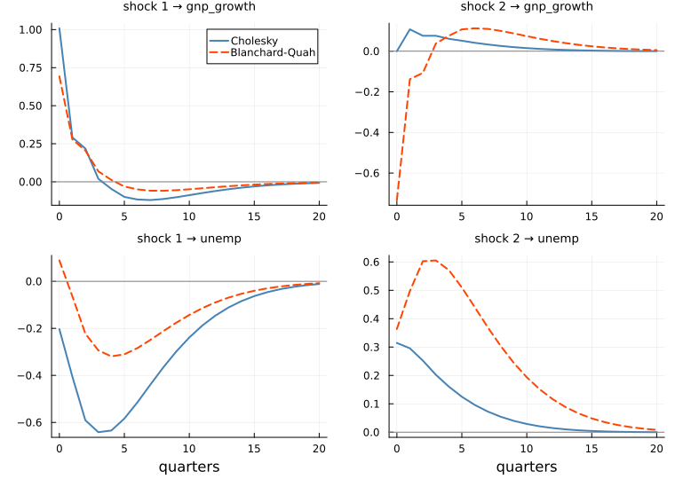
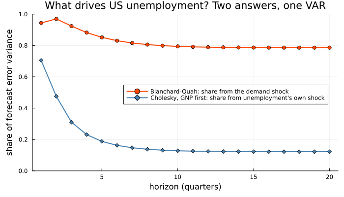
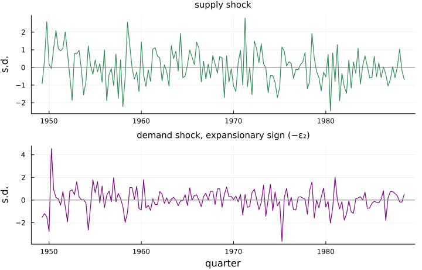

Shocks With Names
using TSAnalytics, Plots, Statistics, LinearAlgebra
g = dataset("global_economy")
ix = findall(==("India"), g.Country)
imports = Float64.(g.Imports[ix])
exports = Float64.(g.Exports[ix])
dY = (dImports = diff(imports), dExports = diff(exports))
m = fit_var(dY, 1)
mr = fit_var((dExports = dY.dExports, dImports = dY.dImports), 1)
u, S = m.resid, m.sigma_df
P1 = cholesky(Symmetric(S)).L # imports ordered first
P2 = reverse(cholesky(Symmetric(mr.sigma_df)).L) # exports first, rewritten in (dImports, dExports) order
println("residual correlation: ", round(S[1, 2] / sqrt(S[1, 1] * S[2, 2]), digits=3))
println("log-likelihood, imports first: ", round(m.loglik, digits=4), " exports first: ", round(mr.loglik, digits=4))
println("imports first, shock columns: ", round.(P1[:, 1], digits=3), " ", round.(P1[:, 2], digits=3))
println("exports first, shock columns: ", round.(P2[:, 1], digits=3), " ", round.(P2[:, 2], digits=3))residual correlation: 0.816
log-likelihood, imports first: -157.9882 exports first: -157.9882
imports first, shock columns: [1.513, 0.968] [0.0, 0.687]
exports first, shock columns: [0.875, 0.0] [1.234, 1.187]arrow(p, v, c, ls, lbl) = plot!(p, [0, v[1]], [0, v[2]]; arrow=true, lw=3, color=c, linestyle=ls, label=lbl)
p = scatter(u[:, 1], u[:, 2]; color=:gray, alpha=0.5, markersize=4, label="one year's surprises",
xlabel="import surprise (points of GDP)", ylabel="export surprise (points of GDP)",
title="India: one cloud, two pairs of shocks", legend=:topleft, aspect_ratio=1,
size=(700, 520), left_margin=4Plots.mm, bottom_margin=3Plots.mm)
arrow(p, P1[:, 1], :steelblue, :solid, "imports first: import shock")
arrow(p, P1[:, 2], :steelblue, :dash, "imports first: export shock")
arrow(p, P2[:, 1], :orangered, :solid, "exports first: import shock")
arrow(p, P2[:, 2], :orangered, :dash, "exports first: export shock")
p
The grey points are the cloud Chapter 48 began from: a year each of surprises in India's import and export shares of GDP, from Chapter 45's VAR. Each pair of arrows writes them as two uncorrelated one-standard-deviation shocks; an arrow is what one shock does to both surprises that year. Blue orders imports first: the import shock moves both shares, 1.513 and 0.968 points of GDP, and the export shock moves exports alone. Orange orders exports first: now the export shock carries the common movement, and the import shock is the remainder, 0.875 points of imports and nothing for exports.
Both pairs fit the cloud perfectly; the log-likelihood is -157.9882 either way. Chapter 48 left the matter there: a correlation of 0.816 has no direction, and the ordering supplies one. This chapter asks the question the ordering hides. If shocks are to have names — an import shock, a supply shock, a demand shock — what must be assumed to give them those names, and can the data check the assumption?
The obvious attempt
Write the ordering down as a model and test it. Imports first says that within the year exports respond to imports and not the reverse: the import surprise is a shock of its own, and the export surprise is a multiple of it plus a shock of its own,
\[u_{1t} = \varepsilon_{1t}, \qquad u_{2t} = a\,u_{1t} + \varepsilon_{2t}, \qquad\text{or}\qquad \begin{pmatrix} 1 & 0 \\ -a & 1 \end{pmatrix} u_t = \varepsilon_t .\]
That is the example both reference packages' documentation usually shows. fit_svar fits it, with the free element of A marked missing:
trap = fit_svar(m; A = [1.0 0.0; missing 1.0], method = :mle) # scoring stalls here; see the box below
just = fit_svar(m; A = [1.0 0.0; missing 1.0], B = [missing 0.0; 0.0 missing])
println("a, as fitted: ", round(-trap.A[2, 1], digits=4), " log-likelihood: ", round(trap.loglik, digits=4))
LR = 2 * (just.loglik - trap.loglik)
println("free parameters: 1 of 3; likelihood ratio against the free-variance version: ",
round(LR, digits=2), " on 2 df, p = ", round(exp(-LR / 2), sigdigits=3)) # χ²₂ tail is exp(−x/2)
println("free-variance version: shock s.d. ", round.(diag(just.B), digits=3),
"; P equals the Cholesky factor: ", just.P ≈ P1, "; lr_test: ", just.lr_test)a, as fitted: 0.64 log-likelihood: -180.1997
free parameters: 1 of 3; likelihood ratio against the free-variance version: 38.26 on 2 df, p = 4.93e-9
free-variance version: shock s.d. [1.513, 0.687]; P equals the Cholesky factor: true; lr_test: nothingThe slope comes out at 0.64, Chapter 48's slope, and the model is rejected: a likelihood ratio of 38.26 on two degrees of freedom. Have the data refuted the imports-first ordering?
They have not, because that is not the model they rejected. Writing ε_t = A u_t and nothing else also says each shock has variance one — one percentage point of GDP — and India's shocks are not that size: freed, they come out at standard deviations of 1.513 and 0.687. Those two fixed variances are the two degrees of freedom the data rejected. With them free, the model is the Cholesky ordering, and there is nothing left to test. The first attempt tested something else; the corrected one has nothing to test. Both failures come down to counting.
The idea
A structural VAR says the reduced-form surprises u_t are mixtures of uncorrelated structural shocks ε_t, through two matrices:
\[A\,u_t = B\,\varepsilon_t, \qquad \varepsilon_t \sim (0, I_K), \qquad\text{so}\qquad \Sigma_u = A^{-1} B B' A'^{-1} .\]
A says how the surprises move one another within the period, B how the shocks load onto them. Amisano and Giannini (1997) organised the cases: an A-model fixes B = I, a B-model fixes A = I, an AB-model restricts both. The data speak about A and B only through Σ_u, which has K(K+1)/2 distinct elements — three for two series, six for three. That is the whole budget. More free elements than that and the model is not identified: infinitely many (A, B) give the same Σ_u. Exactly as many, with a rank condition met, and it is just-identified: it reproduces Σ_u exactly, whatever the data. Fewer, and it is over-identified — the only case in which the data can object, through the likelihood-ratio test of Lütkepohl (2005, §9.3) on K(K+1)/2 minus the free elements degrees of freedom. A Cholesky ordering, slope and two variances, spends exactly three; so does every other ordering, which is why the data are indifferent among them.
Making it work
fit_svar checks the count before it optimises anything. Free both off-diagonal elements of A — feedback in both directions within the year — and keep the free variances:
try
fit_svar(m; A = [1.0 missing; missing 1.0], B = [missing 0.0; 0.0 missing])
catch err
println(sprint(showerror, err))
endArgumentError: fit_svar: 4 free parameters, but Σ_u has only 3 distinct elements for K = 2: the model is not identified (the order condition). Fix more elements of A or B.Refused, with the reason. Two-way feedback within the year is a sensible belief about India's trade; two series cannot estimate it.
A testable restriction needs three variables or more. climhyd, Lake Shasta's weather from Chapter 45, has monthly temperature, dew point and cloud cover. Order them as listed — temperature moves the other two within the month, not the reverse — and then add a restriction of substance: cloud cover responds to dew point within the month but not to temperature directly, A[3,1] = 0, five free parameters for six.
D = dataset("climhyd")
mw = fit_var((Temp = D.Temp, DewPt = D.DewPt, CldCvr = D.CldCvr), 2)
Bd = [missing 0.0 0.0; 0.0 missing 0.0; 0.0 0.0 missing]
sw = fit_svar(mw; A = [1.0 0.0 0.0; missing 1.0 0.0; missing missing 1.0], B = Bd)
println(mw.T, " months; free parameters: ", count(sw.A_mask) + count(sw.B_mask), " of 6; lr_test: ", sw.lr_test)
println("A:"); show(stdout, "text/plain", round.(sw.A, digits=4)); println()
println("s.e. of A[3,1]: ", round(sw.stderr_A[3, 1], digits=4))
sw0 = fit_svar(mw; A = [1.0 0.0 0.0; missing 1.0 0.0; 0.0 missing 1.0], B = Bd)
println("with A[3,1] = 0: ", sw0.lr_test)
println("2(ℓ just − ℓ restricted) = ", round(2 * (sw.loglik - sw0.loglik), digits=4))452 months; free parameters: 6 of 6; lr_test: nothing
A:
3×3 Matrix{Float64}:
1.0 0.0 0.0
-0.3877 1.0 0.0
0.0394 -0.0379 1.0
s.e. of A[3,1]: 0.0016
with A[3,1] = 0: (statistic = 384.9033539613337, df = 1, pvalue = 1.0652260623047138e-85)
2(ℓ just − ℓ restricted) = 384.9034nm = string.(mw.names)
hm = heatmap(nm, nm, sw.A; c=:balance, clims=(-1, 1), yflip=true, size=(560, 460),
title="Lake Shasta: estimated A in A u = B ε")
for i in 1:3, j in 1:3
annotate!(hm, j - 0.5, i - 0.5, text(sw.A_mask[i, j] ? string(round(sw.A[i, j], digits=3)) :
string(Int(sw.A[i, j]), " (fixed)"), 10, sw.A[i, j] > 0.6 ? :white : :black))
end
hm
Row i of A is the equation for variable i's surprise. The zeros above the diagonal are the ordering, stated; below it, -0.3877 says a one-degree temperature surprise brings a dew-point surprise of 0.3877. The extra zero is rejected, at 384.9 on one degree of freedom. The estimate it forces to zero was small, 0.0394, but its standard error is 0.0016; on 452 months small and absent are easy to tell apart. The data could rule here only because the restriction was one more than identification needs.
Restrictions on the long run
Zeros in A and B are claims about who moves whom within the period, and often nobody can defend one. Blanchard and Quah (1989) put the restriction on what a shock does for good. Their variables are output growth and unemployment, and their two shocks are told apart by one claim: a supply shock may change the level of output permanently; a demand shock may move it for a while, but its effect on the level dies away. One zero in the long run, and the model is just-identified.
Their data were US quarterly GNP and unemployment; econ5, from Shumway and Stoffer's astsa, carries the same two series, quarterly from 1948 to 1988. GNP enters as 100 times the change in its log, so a cumulative response is a percentage change in its level.
e = dataset("econ5")
vb = fit_var((gnp_growth = 100 .* diff(log.(e.gnp)), unemp = e.unemp[2:end]), 2)
bq = blanchard_quah(vb)
println("companion roots: ", round.(abs.(roots(vb)), digits=3))
println("impact matrix P = B:"); show(stdout, "text/plain", round.(bq.P, digits=3)); println()
println("long-run impact matrix:"); show(stdout, "text/plain", round.(bq.lrim, digits=3)); println()
rc = irf(bq, 40; cumulative=true)
println("level of GNP after a demand shock, quarters 0, 4, 8, 40: ", round.([rc.orth[k][1, 2] for k in (1, 5, 9, 41)], digits=4))
println("level of GNP after a supply shock, quarters 0, 4, 8, 40: ", round.([rc.orth[k][1, 1] for k in (1, 5, 9, 41)], digits=3))companion roots: [0.757, 0.757, 0.36, 0.156]
impact matrix P = B:
2×2 Matrix{Float64}:
0.693 -0.733
0.089 0.364
long-run impact matrix:
2×2 Matrix{Float64}:
0.752 0.0
-2.649 5.278
level of GNP after a demand shock, quarters 0, 4, 8, 40: [-0.7329, -0.8639, -0.434, 0.0001]
level of GNP after a supply shock, quarters 0, 4, 8, 40: [0.693, 1.258, 1.06, 0.752]L = bq.lrim
hl = heatmap(["shock 1 (supply)", "shock 2 (demand)"], ["gnp_growth", "unemp"], L;
c=:balance, clims=(-6, 6), yflip=true, size=(560, 420),
title="econ5: the long-run impact matrix")
for i in 1:2, j in 1:2
annotate!(hl, j - 0.5, i - 0.5, text(string(round(L[i, j], digits=3)), 11, abs(L[i, j]) > 4 ? :white : :black))
end
hl
There must be a long run to restrict — the largest root is 0.757, and blanchard_quah refuses an unstable VAR. The zero is the restriction: shock 2's permanent effect on the level of GNP. Shock 1, allowed one, raises GNP by 0.752 per cent for good. Only that row reads as levels; unemployment entered as a level, so its row has no long-run meaning of its own. The cumulative responses show the restriction at work:
plot(rc; size=(750, 580))
The top-right panel is the point of the exercise. The demand shock lowers the level of GNP by 0.733 per cent in its own quarter and 0.864 a year later, and the effect then fades to nothing — 0.0001 after ten years. The supply shock lifts it to 1.258 within a year and settles at the permanent 0.752.
That the demand shock lowers output is not an estimate. A structural shock's sign is a normalisation: ε and -ε have the same variance, so the data cannot say which way round a shock is meant. As estimated, shock 2 is contractionary; flip its column and it is expansionary, with nothing else changed. Now compare a Cholesky ordering, GNP growth first, on the same VAR:
ro, rs = irf(vb, 20), irf(bq, 20)
println("impact, Cholesky: "); show(stdout, "text/plain", round.(ro.orth[1], digits=3)); println()
println("unemployment after shock 1, quarters 0–3, Cholesky: ", round.([M[2, 1] for M in ro.orth[1:4]], digits=3))
println("unemployment after shock 1, quarters 0–3, Blanchard-Quah: ", round.([M[2, 1] for M in rs.orth[1:4]], digits=3))
fb, fc = fevd(bq, 20), fevd(vb, 20)
println("unemployment's FEVD share from shock 2 at 1, 4, 20 quarters")
println(" Blanchard-Quah (demand): ", round.(fb.decomp[2, [1, 4, 20], 2], digits=3))
println(" Cholesky (unemp's own): ", round.(fc.decomp[2, [1, 4, 20], 2], digits=3))impact, Cholesky:
2×2 Matrix{Float64}:
1.009 0.0
-0.203 0.314
unemployment after shock 1, quarters 0–3, Cholesky: [-0.203, -0.405, -0.591, -0.642]
unemployment after shock 1, quarters 0–3, Blanchard-Quah: [0.089, -0.064, -0.223, -0.294]
unemployment's FEVD share from shock 2 at 1, 4, 20 quarters
Blanchard-Quah (demand): [0.944, 0.882, 0.786]
Cholesky (unemp's own): [0.705, 0.231, 0.122]panels = map(Iterators.product(1:2, 1:2)) do (i, j)
q = plot(0:20, [M[i, j] for M in ro.orth]; lw=2, color=:steelblue, label=(i, j) == (1, 1) ? "Cholesky" : "",
title="shock $j → $(vb.names[i])", titlefontsize=9, xlabel=i == 2 ? "quarters" : "")
plot!(q, 0:20, [M[i, j] for M in rs.orth]; lw=2, color=:orangered, linestyle=:dash,
label=(i, j) == (1, 1) ? "Blanchard-Quah" : "")
hline!(q, [0.0]; color=:gray, label="")
end
plot(vec(permutedims(panels))...; layout=(2, 2), size=(760, 540), left_margin=3Plots.mm)
The panels disagree from the first quarter. Cholesky forbids shock 2 to move GNP growth within the quarter; the long-run restriction lets it, and it does. Shock 1 under Cholesky lowers unemployment at once, by 0.203; under Blanchard-Quah it raises it by 0.089 before lowering it. The variance decomposition is starker, because it answers the question people ask of such a model: what drives unemployment?
plot(1:20, fb.decomp[2, :, 2]; lw=2, marker=:circle, color=:orangered, ylims=(0, 1),
label="Blanchard-Quah: share from the demand shock", xlabel="horizon (quarters)",
ylabel="share of forecast error variance", legend=:right,
title="What drives US unemployment? Two answers, one VAR", size=(700, 400),
left_margin=4Plots.mm, bottom_margin=4Plots.mm)
plot!(1:20, fc.decomp[2, :, 2]; lw=2, marker=:diamond, color=:steelblue,
label="Cholesky, GNP first: share from unemployment's own shock")
Under Blanchard-Quah, demand shocks account for 0.944 of unemployment's one-quarter forecast error variance and still 0.786 at five years; under the Cholesky ordering the second shock's share falls from 0.705 to 0.122. "US unemployment was mostly demand" is the kind of conclusion people quote; here it is a property of the identification. Named shocks can also be read off history, as ε_t = P⁻¹u_t, one pair per quarter:
ε = (bq.P \ vb.resid')'
qt = 1948.5 .+ 0.25 .* ((1:vb.T) .+ 2) # econ5 starts in 1948 Q3; two lags and a difference
println("sample covariance of ε: ", round.(cov(ε), digits=3))sample covariance of ε: [0.975 -0.0; -0.0 0.975]plot(qt, [ε[:, 1] -ε[:, 2]]; layout=(2, 1), link=:x, legend=false, lw=1.2, color=[:seagreen :purple],
title=["supply shock" "demand shock, expansionary sign (−ε₂)"], titlefontsize=10,
ylabel="s.d.", xlabel=["" "quarter"], size=(720, 460))
hline!([0.0 0.0]; color=:gray)
The shocks are uncorrelated by construction (variance 0.975 rather than one because the reduced form's covariance divides by degrees of freedom). The demand panel is drawn with its sign flipped, so that down is contractionary. A reader who accepts the long-run restriction can read it as a history of American demand; one who does not has no reason to read it at all.
fit_svar maximises the concentrated log-likelihood (Lütkepohl 2005, §9.3) by Amisano and Giannini's scoring algorithm, or by quasi-Newton with method = :mle, using the degrees-of-freedom Σ_u both references decompose — so a just-identified loglik sits a little below the VAR's own. blanchard_quah needs no optimiser: the long-run matrix is the Cholesky factor of Ψ_∞ Σ_u Ψ_∞′, Ψ_∞ = (I − Σ_j A_j)⁻¹. Responses reuse Chapter 48's recursion with P = A⁻¹B; plot labels impulses shock j.
The complication
Here is the whole chapter in one comparison:
sc = fit_svar(vb; A = [1.0 0.0; missing 1.0], B = [missing 0.0; 0.0 missing])
println("econ5, Cholesky as an AB-model: ", round(sc.loglik, digits=4), " Blanchard-Quah: ", round(bq.loglik, digits=4))
println("India, imports first: ", round(just.loglik, digits=4), " exports first: ",
round(fit_svar(m; A = [1.0 missing; 0.0 1.0], B = [missing 0.0; 0.0 missing]).loglik, digits=4))econ5, Cholesky as an AB-model: -266.9433 Blanchard-Quah: -266.9433
India, imports first: -161.0715 exports first: -161.0715The two identifications of the US economy, which disagree about what drives unemployment, have the same likelihood to the last digit; so do India's two orderings. That is no accident of these data: every just-identified scheme reproduces Σ_u exactly, so each fits as well as every other. Only restrictions beyond identification — A[3,1] = 0 at Lake Shasta, the fixed variances of the first attempt — are testable, and the just-identified core is never at risk.
So identification is an assumption, and a structural VAR does not remove it. It makes it explicit. "Exports do not move imports within the year" and "demand shocks have no permanent effect on output" are claims a reader can see and dispute, as a column order in a data frame is not. If demand can move the level of output for good — through hysteresis in the labour market, say — Blanchard and Quah's restriction is false, and every Blanchard-Quah number above changes without the likelihood moving at all.
On the models that are identified and fitted at their optimum, the three agree. vars 1.6.1 reproduces the India AB-model (A[2,1] = -0.6399843, B diagonal 1.512613 and 0.6869882), the econ5 Blanchard-Quah B and long-run matrix to every printed digit, and the Lake Shasta statistic, 384.9034 on 1 df; statsmodels 0.15.0 matches the India AB-model to six figures.
They part company on the first attempt, the A-model with B = I:
ts = fit_svar(m; A = [1.0 0.0; missing 1.0]) # the default, scoring
println("scoring converged: ", ts.converged, "; A[2,1] = ", round(ts.A[2, 1], digits=4))
println("lr_test: ", ts.lr_test)
println("T(ln|Σᵣ| − ln|Σᵤ|) = ", round(m.T * (logdet(ts.P * ts.P') - logdet(S)), digits=4),
"; 2(ℓᵤ − ℓᵣ) = ", round(2 * (just.loglik - ts.loglik), digits=4))scoring converged: false; A[2,1] = -0.64
lr_test: (statistic = 38.25639163467402, df = 2, pvalue = 4.928674163877225e-9)
T(ln|Σᵣ| − ln|Σᵤ|) = -4.3008; 2(ℓᵤ − ℓᵣ) = 38.2564vars' scoring fails too: after 1000 iterations it stops, with a warning, at A[2,1] = -1.084406, and reports a statistic of -4.300835, p = 1. That number is T(ln|Σᵣ| − ln|Σᵤ|), which is the likelihood ratio when the structural variances are free and not when they are fixed: with a unit-diagonal A and B = I, |Σᵣ| is one whatever A[2,1] is, so the statistic is −T ln|Σᵤ|, its sign set by the units of the data. TSAnalytics' lr_test used the same short form until writing this chapter turned the problem up; it now computes 2(ℓᵤ − ℓᵣ) in full, the 38.26 printed above. statsmodels hides the problem another way: its SVAR llf is -157.98818584868235 for this model and the just-identified one alike — the unrestricted VAR's, whatever the restrictions — in 0.15.0, and in 0.14.1 with solver="nm" (its default solver stops with a TypeError here). fit_svar reports -180.1997.
Where this leaves you
You can now name shocks and say what the names cost: short-run restrictions in A-, B- and AB-models, long-run restrictions in the manner of Blanchard and Quah, a count that settles identification before fitting, a test for restrictions beyond it, and structural responses and decompositions read with their signs as normalisations. And you know the limit: a just-identified scheme is an assumption the data cannot check.
That closes Part X, which began by asking what modelling two series together buys and followed the answer through prediction, impulse, cointegration and identification. What you cannot yet do is put a band on a structural response — irf on a structural model returns point estimates and refuses stderr and boot by name — or identify shocks by the signs of their effects rather than by zeros. Those, and the other places the package stops, are Chapter 52's subject.
See also
- Chapter 45 — the India VAR, and
climhyd - Chapter 48 — impulse responses, the Cholesky ordering and the variance decomposition this chapter generalises
- Chapter 50 — long-run relations of another kind, between non-stationary levels
- Structural VAR — the manual chapter, with every argument and the reference conventions
- Coming from R or Python —
missingwherevarshasNAandstatsmodelshas"E" - API:
fit_svar,blanchard_quah,SVARModel,irf,fevd